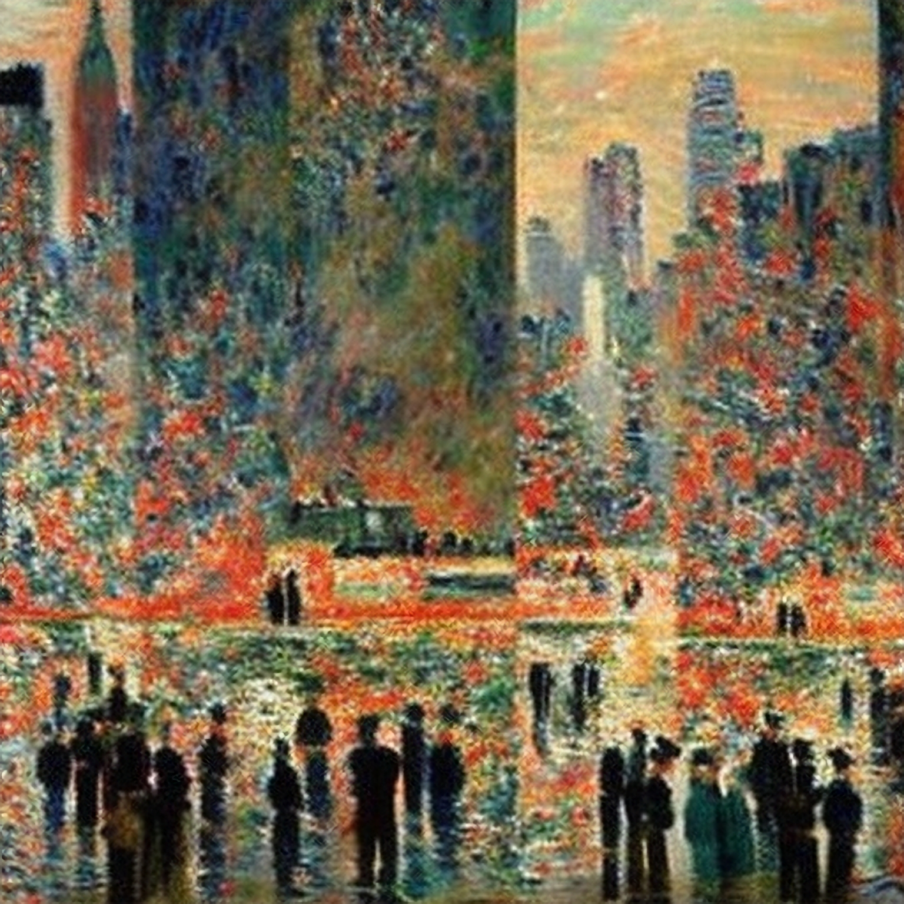

Abolish the Museum of Modern Art

MoMA by Stable Diffusion: AI created visuals will break people
Of all the lies that make up the foundation of New York City, the museum of modern art is perhaps the most egregious of them all. It’s the Museum of Modern Art. WHERE IS THE MODERN ART I ask? I have looked everywhere but I have yet to find one (1) piece of modern art. Half the art in sight is older than the building within which it is housed. The building, might I remind you once again, claims to contain modern art. The lies have gone on for far too long. This has to stop.
We need to hold the MoMA accountable. I propose a new law, nay, a new way of living. If the art is more than a year old, it must be discarded from the building, immediately. Replace the art historians with scientists who routinely perform carbon-dating to ensure the modernity of the art. I want people with stopwatches, timers to keep track of every single piece in the museum. Museum staff with F1-style wheel guns ready to uninstall pieces the moment the timer goes off. Ultra-fast elevators and zip lines at the ready to cart away pieces at a pace which befits the modern world we live in. Perhaps a trebuchet to launch the piece into the stratosphere. Maybe we aim the trebuchet at the Titan(ic). A little french guy wearing a little beret and smoking a hand rolled cigarette could be the master of ceremony. Oil crisis on the horizon? Oh do I know a source of oil—The Starry Night has the yield of a small oil deposit. Monet’s Water Lilies is about the size of Qatar.
Where is our renaissance? I want to live in a world where new art is created, celebrated and not co-opted by a nerd on Twitter with a monkey PFP. I want deep fried memes wallpapered on the walls. A cacophony of Tik Tok cancellations reverberating through the corridors. Tapestries of fan-fic furry porn hanging from the high ceilings. We, the creators of modern art must stand up and claim what is ours. For far too long, we have been banished and relegated to the crummy art galleries of Chelsea, run by strange people who’s greatest accomplishment is their stupendously large wine collection which is chemically indistinguishable from paint stripper.
Can we all stop pretending that we enjoy looking at these old paintings? You know it's shit, I know it's shit, and so does the pretty girl you’re trying to seduce on your museum date. Moreover, it’s probably, definitely, not healthy for our little deviant, dopamine addicted brains to watch paint quite literally dry. Reject tradition, embrace modernity.
Yes, I know 'Modern' refers to a specific era of art, but that too needs to change. Enough with the twisted semantics, it makes for terrible branding.